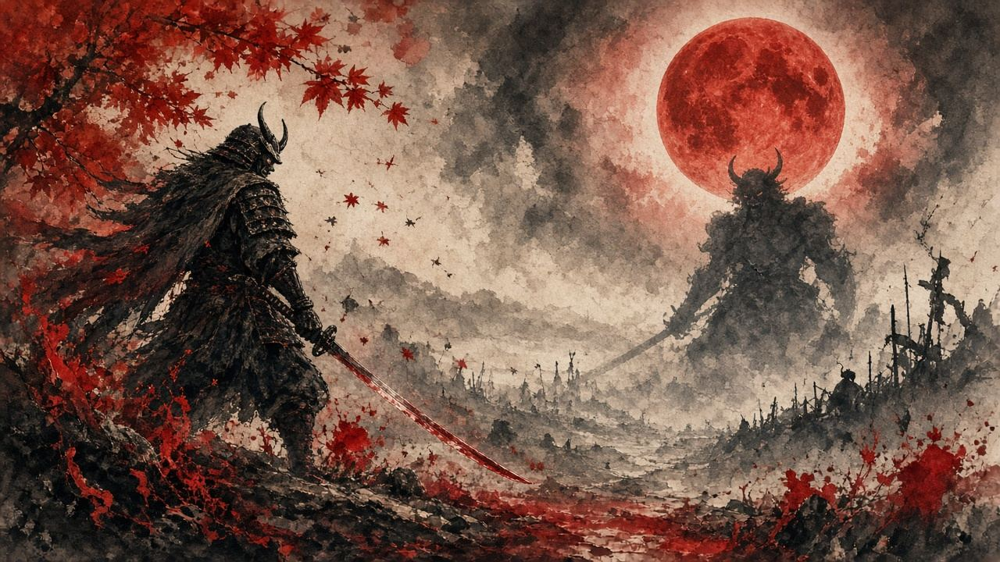
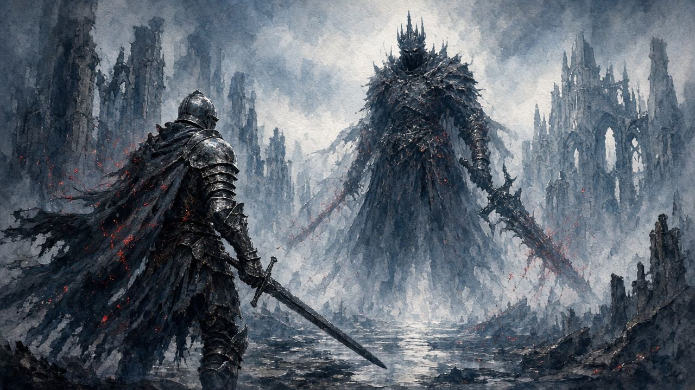

一階 · 太刀對決
- 彈反削耐力；紫氣完美格／化勁
- 肩敲 → 高速突刺＝彈反 cue
- 白光／粉紅遠斬：近擋遠閃
- 雙足飛踢可一閃打倒
- 抓取必閃——被抓大吸魂並強化對方太刀

最終 BOSS · 任務《劍之道》· 蓮台野衝突／遮那王城天守 · 三血條連打 · PowerPyx 約 8.5/10
道具盡量留到二階段後半～三階段。御守優先覺醒／鬼力；技能要有第三御守位同 Onslaught 強化。
日文片 5oVYGL6uV0k @ 51s 有御守講解；招式卡亦有鎖秒。

繁中優先 Dino（D9F5_cfWtw0）；英文總覽 Tenkiei（U0cxgTOSHkQ）；並存日文／鬼殺鎖秒卡。開頁自動嵌播；原始碼見「短片待嵌」屬正常。完整長片見 #videos。
預兆：發光手伸嚟——唔好以為係普通斬。
必閃／反抓。中招＝大吸魂＋強化對方太刀，令後段更難。
19–32s · D9F5_cfWtw0 @ 19s →
預兆：粉紅軌跡遠距能量斬。
遠閃避攢 Reflex；近先擋／彈。唔好硬吃。
32–48s · @ 32s →
預兆：連續三下太刀；肩敲後常接突刺。
逐下彈反削耐力；肩敲＝彈反 cue。
48–68s · @ 48s →
預兆：遠距瞬移＋發光手。
一樣必閃。P2 抓取同樣吸魂強化。
68–84s · @ 68s →
預兆：空中猛砸落地＋地裂。
一恢復控制即往遠處衝刺，唔好原地硬擋。
84–103s · @ 84s →
預兆：躍起後連續兩下下劈。
側閃或彈；唔好企死位頂。
103–126s · @ 103s →
預兆：拉開距離射箭雨。
可以彈返；唔好轉身狂跑亂位。
165–187s · @ 165s →
預兆：粉光軌跡三連。
跟距離：遠閃、近擋／彈；留精力應付抓取。
202–230s · @ 202s →
預兆：全場真空吸魂，之後常接全屏斬。
用籠手搶魂；已覺醒可用 Onslaught 打斷。唔搶≈結束。
230–285s · @ 230s →
用途：整段一階節奏示範。
跟彈反節奏；零抓優先過一階。
285–410s · @ 285s →
用途：鎧甲期＋紫魂處決節奏。
開場跑地裂 → 彈反為主 → 處決攢紫魂。
536–674s · @ 536s →
用途：覺醒循環至收尾。
搶吸魂 → 變身 → 一閃 → 槽尾／吸魂窗 Onslaught。
674s–end · @ 674s →
用途：英文 Key Moves（Phase 1）。
對照 Dino 繁中卡；學肩敲／抓取／遠斬距離。
0–196s · U0cxgTOSHkQ →
用途：Key Moves Phase 2（約 4:10 起）。
地裂、三連不可閃、箭雨、紫魂處決。
250–425s · @ 250s →
用途：覺醒／吸魂／Onslaught 講解。
非覺醒唔掉血；預留 2–4 次循環。
551–780s · @ 551s →
用途：戰前御守配置（5oVYGL6uV0k）。
對照頁內覺醒＋鬼力優先；第三槽盡開。
51–130s · @ 51s →
用途：一階危險招速覽。
同 Dino 抓技／粉紅斬對照睇。
131–210s · @ 131s →
用途：二／三階危險招。
地裂遠跑、吸魂搶魂、覺醒傷害窗。
211–294s · @ 211s →
用途：講解後整場實戰。
跟節奏；唔熟先 Action 再鬼殺。
295s–end · @ 295s →
用途：超長片一階實戰戳點。
當備援實戰窗；主線仍跟 Dino／Tenkiei。
start=1355 · @ 1355s →
用途：二階戳點。
對照地裂遠跑＋紫魂處決。
start=1518 · @ 1518s →
用途：三階覺醒循環戳點。
對照 #p3 搶吸魂循環。
start=1851 · @ 1851s →
用途：BOSS 戰段 163–458s。
跟無傷節奏練彈反窗；唔好抄難度設定。
163–458s · @ 163s →
用途：純實戰章節起點（少解說）。
當節奏參考；細節跟 Dino／Tenkiei。
13–204s · @ 13s →
用途：二階章節。
對照鎧甲彈反＋紫魂。
204–447s · @ 204s →
用途：三階至收尾。
數覺醒次數；Onslaught 留槽尾／吸魂窗。
447s–end · @ 447s →
非覺醒狀態無法傷害血量。目標：穩定重複「搶吸魂 → 變身 → 一閃 → 槽尾／吸魂窗 Onslaught」，約 2–4 次覺醒收工。
詳細英解見 Tenkiei @ 551s；簡化路線 tateyou 1SCpQfvBT2k @ 329s。
以下全嵌 YouTube。B 站只外連唔嵌。無本地 mp4。
D9F5_cfWtw0 · 招式章節極細；鎖秒卡主源
U0cxgTOSHkQ · Maxroll 指向；P1／P2／P3 章節最清晰
1SCpQfvBT2k · Game Plan → P1 → P2 → P3
qCMSQtHmhEg · 招式表＋道具／御守＋P3 實戰
HgPb6tvwydM · 約 43s 短片
UYpn_MNzeEE · ビルド／立ち回り／最終形態
御守 51–130 · P1 131–210 · P2/P3 211–294 · 実戦 295–end
BOSS 戰段約 163–458s（鎖秒卡已拆）
無細章節＝全嵌；人手自跳
n5RE-_XzvDg · 備援鬼殺實戰；無章節
全段嵌播（權威難度表來源相關）
tI0TKeUnyKU · 章節約 13／204／447（鎖秒卡已拆）
P1 @1355 · P2 @1518 · P3 @1851（鎖秒卡已拆）
多源有出入；頁內「建議」跟核實稿。補丁會改手感，以遊戲內同 PowerPyx／主 walkthrough 為準。
| 議題 | 說法 A | 說法 B | 建議 |
|---|---|---|---|
| 一二階開唔開覺醒 | allthings.how／多數：留滿入三階 | TheGamer：P1 可開覺醒＋一閃削半血；Maxroll：魂易被偷，未熟練當 use-it-or-lose-it | 鬼殺／第一次打：優先留滿或接近滿入 P3；熟練可 P1–2 消耗再 farm |
| 吸魂後全屏斬 | PowerPyx／GamerSky／Ludens：中招≈結束 | Maxroll：中一兩次唔等於全滅 | 仍當最高優先躲避；有 i-frame／覺醒 Onslaught 就打斷 |
| Onslaught 時機 | 槽將盡先放（傷害更高） | 專用打斷 Soul Drain 大斬 | 兩者都啱：一般收尾放槽尾；見到吸魂＋已覺醒就優先打斷 |
| P2 普攻削耐力 | Wiki／Ludens：鎧甲令普攻幾乎無效 | TheGamer：仍靠彈反／處決削 | 以彈反為主，唔好硬砍架勢 |
| 巨大白光／粉紅遠斬 | 近彈反、遠閃避 | TheGamer：遠距建議閃避攢 Reflex | 跟距離：遠閃、近擋／彈 |
| P1 失敗抓取 | Maxroll：即時強化太刀，令 P2 三連不可閃更難 | 其他源多只寫吸魂強化 | 抓取＝最高優先；P1 盡量零抓 |
招式唔清楚、想加邊個 Boss、有錯漏——丢句說話。留言經 Netlify Forms 直達網主信箱／後台，唔再只係本機保存。
你嘅意見已送出俾網主。想再講可以繼續填。